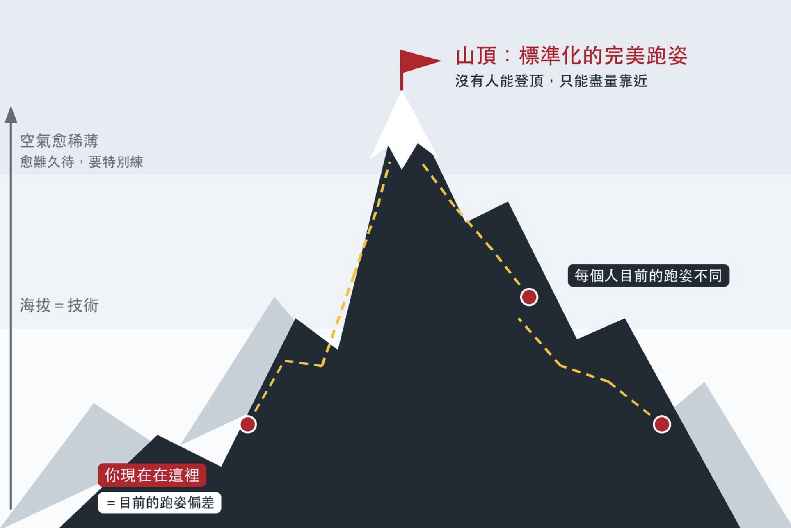

每個人的身體都不一樣，但優美的跑姿卻很一致
最近幾個月我密集開發跑姿分析的演算法，期待今年年底前可以上線，讓更多跑者可以透過演算法享受到專業教練等級的跑姿分析與指導。
前幾天，RQ 團隊的其中一位夥伴問了我一個問題：「每個人的身體條件、跑步型態本來就有差異，跑姿分析是用什麼邏輯去看待這些個體差異？它想幫跑者解決的問題又是什麼？」
這也是我在教學時最常碰到跑者的問題之一。
直覺上會認為每個人的身體構造不同、條件與實力不同，所以跑姿一定會不同。這是事實沒錯。但這裡面有一個關鍵：
❝ 我們的身體都在同一個重力場下運動，當重力消失我們就無法向前跑出任何一步。所以身體怎麼跟重力互動，就變得至關重要。❞
跑者跟重力互動的規則有一定的標準可言，這不是人類可以擅自決定的！
跑姿可以因人而異。可是一位跑者的跑姿如果不利於跟重力互動，甚至用不當的姿勢去對抗重力，而且跑得太長、太快的話，就很容易受傷。就像是被自然（重力）處罰。
我們都學過：人要懂得謙卑，不只在老師和專業面前要謙卑，在自然與重力之前更要保有一個謙卑的心，若以為自己可以擁有獨有的跑姿去跑而不用在意自然的規定，那就未免太自以為是了，很可能會被自然處罰。
下面有兩件事實跟大家分享：
❶ 每個人的身體不同、條件不同，跑姿一定會不同。
❷ 少數跑得特別優美，動作看起來簡潔、輕快又省力的跑者，跑姿卻非常一致。
第 ❶ 點當然沒錯，每個人都不同，每個人的跑步姿勢也都不會完全一模一樣。但第 ❷ 個事實很少人發現，也很少人去研究：哪一種跑姿最有利於跟重力合作？那個一致的跑姿是什麼？又該如何往它靠近？這三個問題，正是我多年來學習和研究跑步技術的重點。
愈能有效跟重力合作的動作，愈接近完美。那麼，什麼是完美的動作呢？
古代哲人對「完美」已有許多共識，其中一個定義是：
❝ 沒有多餘姿勢的動作。 ❞
這個沒有多餘姿勢的動作，該如何用數據來定義，是我最喜愛的研究工作。近期有了重大進展，讓我非常興奮，所以在工作之餘有感而發，寫下了這篇。
除了分析動作中是否有多餘的姿勢之外，分析動作的效率還可分成兩條進路：
▹ 進路一：左右的差異。
▹ 進路二：某個身高的跑者在某個速度下，最佳的觸地時間、拉起高度、各種角度與垂直振幅的最優化 → 某個數據的組合上最能有效利用重力的數據 →這些數據可能會因為跑者目前的活動度、核心力量、下肢剛性或彈性不足而無法做到，但如上文所言，它是個可以追求的目標。
這是純物理的分析，要從「做不到」到「做得到」，則要靠體能、力量和技術訓練同步努力。
很多人以為每個人都不一樣，所以有一種專屬於自己、獨一無二的「最佳個人化跑姿」。
我們從小就學過，人要懂得謙卑。面對老師與專業，要謙卑才能避開災禍、平安成長；面對自然與重力，更要保有一顆謙卑的心，如果以為自己可以用一種獨一無二的跑姿，而不必理會自然的規律，那就未免有些自大了。
所以我們要學習順服重力，不要對抗它；順從它，聽它的話，才能提高效率、避免受傷。
我喜歡用一座山來比喻。
❝ 完美的跑姿，是一座永遠無法登頂的山。 ❞

圖中的黃色虛線，代表每個人登頂的路徑都不同。我認為不是把完美跑姿的標準拿來個人化，真正需要個人化的是黃色路徑的部分，也就是每個人該選擇哪條路徑往上爬，又該使用哪些工具。
山頂只有一個，但每個人現在所站的位置不同，所以爬上山頂的路徑也不同。跑姿分析做的第一件事，是告訴你現在站在哪裡，也就是目前的跑姿偏差在哪。
跑姿偏差大的人，好比還在山腳下，要改善很容易，稍微調整就能輕鬆往上爬。
然而，一位頂尖跑者已經接近山頂，動作雖然很漂亮，卻還不是完美。這時就像身處空氣稀薄的高山，想再往峰頂前進，得手腳並用，辛苦老半天才能多上升一點點，而且一不小心又滑下來，要很努力才能維持在接近完美的位置。（游泳教練張育銘教練也曾說過他會繼續讓頂尖選手練基本技術，這是為了維持高品質的動作）
這座技術大山，沒有任何一位跑者可以登頂，只能盡量靠近。
❝ 面對高山，我們總要抱持謙卑的心情來攀登，更何況，這是座永遠沒人可以攻頂的高山。 ❞
這正是訓練有意思的地方，我已知道無法攻頂，但還是會想努力。努力要有「目標」，認識完美就是認清目標，有目標才有方向。所以要先知道完美是什麼（這需要學習），知道後還要特別去練，才能在高速與長距離裡，盡量讓自己待在比較高的海拔。
每個人的起點不同，路也不同，山頂卻是同一個。
這個「路徑」，才是個人化的部分。可是要規劃路徑，必須先知道兩件事：自己現在在哪裡，以及要去哪裡。
這就好比 Google Maps，有了自己的所在位置（GPS 定位）和目的地，才能規劃出最佳路徑。如果讓一個不知道目的地在哪的人使用，再強大的工具也無從規劃。
「位置」或「目標」只要缺了一個，路徑就無法決定。
目的地，就是完美的跑姿，這要透過學習。
確認自己的所在位置，正是跑姿分析的目的，這可以透過教練和工具。
先知道自己站在哪裡，才能有效率地一步一步往目標靠近。